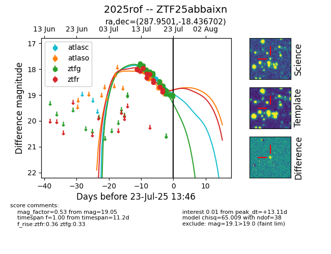

Target ZTF25abbaixn at 2025-07-23 13:46, see:
FINK: fink-portal.org/ZTF25abbaixn
Lasair: lasair-ztf.lsst.ac.uk/objects/ZTF25abbaixn
ALeRCE: alerce.online/object/ZTF25abbaixn
TNS: wis-tns.org/object/2025rof
YSE: ziggy.ucolick.org/yse/transient_detail/2025rof
alt names
ZTF25abbaixn (ztf,fink)
2025rof (tns,yse)
coordinates:
equatorial (ra, dec) = (287.9501,-18.43670)
galactic (l, b) = (18.5055,-12.65760)
photometry
last atlasc=18.37, atlaso=18.72, ztfg=19.05, ztfr=18.81
1 atlasc, 7 atlaso, 22 ztfg, 12 ztfr detections
